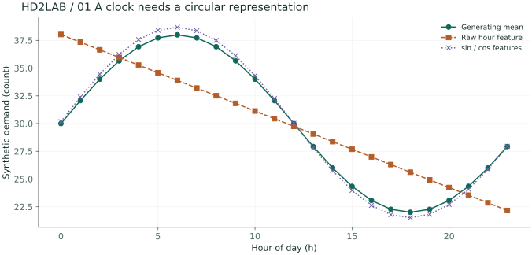
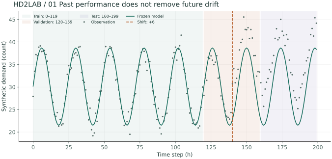
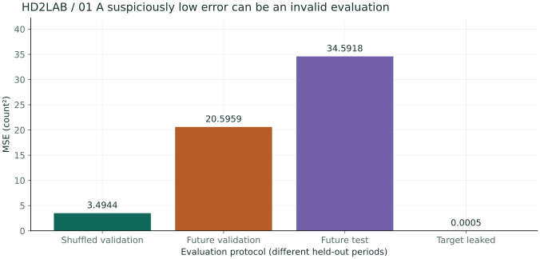
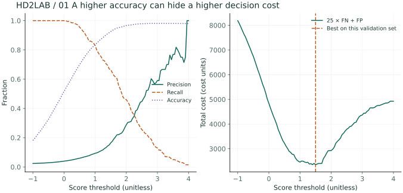

01 / Define the prediction time
Suppose a fictional bicycle rental station predicts rentals over the next hour. Before choosing a model, define when the prediction is made and what is known then. At 8 a.m., the actual weather at 9 a.m. and returns over the next hour are unknown. Including these values just because they exist in the training data introduces future information.
These materials use no real operational data. Small synthetic examples illustrate data representation, learning, and validation. Experimental results are observations under synthetic conditions, not evidence of real service performance.
02 / Observations as vectors
Represent one observation as a vector x and stack observations as rows of X. With N samples and D features, X is an N × D matrix. Each row has a corresponding target y. Reordering the rows requires reordering the targets as well.
X ∈ ℝN×D, y ∈ ℝN
| Prediction time | Temperature (°C) | Rain probability | Available bicycles | Subsequent rentals |
|---|---|---|---|---|
| 08:00 | 18 | 0.2 | 24 | 11 |
| 09:00 | 20 | 0.1 | 17 | 14 |
| 10:00 | 22 | 0.1 | 12 | 10 |
Numeric storage does not make distance meaningful. Station IDs 1 and 2 are not necessarily more similar than 1 and 9. Categorical variables need a representation such as one-hot encoding. Since time is cyclical, two coordinates can represent proximity across midnight.
03 / A model is a function with assumptions
A model maps inputs to outputs. A linear model assumes additive feature contributions. A probabilistic model also represents uncertainty: the same input may produce different outputs. Neither representation captures reality completely.
θ denotes parameters estimated from data. Polynomial degree, learning rate, and regularization strength are hyperparameters specifying the learning process. Learning selects parameters within a fixed function family according to an objective.
| Learning setting | Given information | Question |
|---|---|---|
| Supervised learning | Inputs and targets | How many rentals? Which category? |
| Unsupervised learning | Primarily input observations | What structure, distribution, or compressed representation exists? |
| Reinforcement learning | States and rewards following actions | Which actions increase long-term reward? |
Dimensionality reduction and clustering are typical unsupervised tasks. These labs focus on supervised and unsupervised learning. Reinforcement learning adds an environment and sequential decisions and is only outlined here.
04 / Define a good prediction
Loss quantifies the difference between targets and predictions. In regression, squared error weights large residuals more strongly; absolute error responds linearly to residual magnitude. Choose a loss according to the cost of mistakes.
MAE = (1/N) Σi |yi − ŷi|
For residuals [1, −2, 3], MSE is 14/3 and MAE is 2. MSE has squared target units; RMSE restores the original units. Classification accuracy can hide failures on rare classes, so inspect a confusion matrix too.
05 / Separate learning from evaluation
Fit coefficients on training data, choose settings on validation data, and assess final performance on separate test data after selection. Repeated changes based on test results turn the test set into a validation set in practice.
When chronology matters, as with rentals, train on the past and validate on a later period. Random splits can leak future patterns into past predictions. Compute means, standard deviations, and imputation values only on training data. With independent samples, cross-validation measures variability across splits.
import numpy as np
X = np.array([[18,.2,24],[20,.1,17],[22,.1,12],
[17,.6,30],[16,.8,28],[19,.3,21]], dtype=float)
y = np.array([11,14,10,6,4,9], dtype=float)
cut = 4 # It’s a time-division approach for explanation purposes. In actual performance evaluation, there’s a lack of samples to make a proper judgment.
mu, scale = X[:cut].mean(0), X[:cut].std(0)
scale[scale == 0] = 1
X_valid = (X[cut:] - mu) / scale
baseline = np.full(len(y[cut:]), y[:cut].mean())
print("validation MSE:", np.mean((y[cut:] - baseline)**2))06 / Check your understanding
Does having more samples than features guarantee a good model?
No. Sample diversity, available information, leakage, distribution shift, and model assumptions also matter. Sample count alone cannot guarantee generalization.
Can we standardize the entire dataset before splitting?
For evaluation, estimate the mean and standard deviation from the training partition. The entire dataset includes information about the evaluation distribution.
Takeaway: Define observation units, prediction time, and evaluation criteria before model selection. The next chapter computes a linear model by minimizing loss.
Advanced A / Design time features and evaluate the future
Problem to explore Compare raw numeric time with periodic features. Does a model that explains the past remain valid in the next period?
Generate 200 hourly request values for fictional equipment: t=0,…,199, h=t mod 24, and y=30+8sin(2πh/24)+6·1[t≥140]+ε, ε~N(0,1.5²). Requests are a continuous approximation without rounding. Use NumPy seed 2101. Fix training at 0–119, validation at 120–159, and test at 160–199.
θ̂ = argminθ ‖ytrain − Φtrainθ‖²
- Linear time features [1,h] place 23:00 far from 00:00. The sine and cosine coordinates place a day on a circle, making both sides of midnight neighbors.
- Fit both models by least squares using only the 120 training observations. Do not refit coefficients using the validation period.
- Validation MSE falls from 35.405 with raw time to 20.596 with periodic features. This improves the fit but remains far above the generating noise variance, 2.25.
- The mean shifts by 6 at t=140. The periodic model cannot learn this change either, giving test MSE 34.592. Better representation and adaptation to distribution shift are separate issues.


Would adding trend t as a feature automatically fix this change?
Training contains no abrupt level shift, so a simple trend cannot reveal a future jump. Evaluate retraining rules, change-detection indicators, and post-detection performance on separate time periods.
Advanced B / Find leakage in suspiciously good results
Problem to explore A model achieves MSE below 0.001. Is it excellent, or does it use information unavailable at prediction time?
Separate three mistakes on the same sample: mixing time periods, selecting a model using the test set, and including part of the target as a feature. To demonstrate the last mistake, create a post-request aggregate z=y+δ, δ~N(0,0.02²). This feature does not exist at prediction time.
- List valid inputs as of prediction time. Earlier aggregates are usable; post-event aggregates for unfinished requests are not.
- Shuffling the first 160 observations into 120/40 gives the periodic model validation MSE 3.494. Compared with chronological validation MSE 20.596, this changes the difficulty of distribution shift. Since observations differ, this is not a pure comparison of model improvement.
- Adding z to the training features lowers future validation MSE to 0.000496. But the validation features contain the target itself, making this invalid predictive performance.
- Determine means, standard deviations, imputation, and feature selection on training observations only. Apply the fixed transformation to validation, and inspect the final test once after selection.

Expand the core calculation code
An excerpt from the corresponding advanced Python function. Full data generation and helper functions are available in the downloads below.
train = np.arange(120)
valid = np.arange(120, 160)
mu, sd = X[train].mean(0), X[train].std(0)
sd = np.where(sd == 0, 1, sd) # Processing of specific features
Z_train = (X[train] - mu) / sd
Z_valid = (X[valid] - mu) / sd
# Forbidden comparisons: z = y + noise
# The features that include the correct answer cannot be resolved through the above transformation.Is it safe to split training and validation first, then create target-based features separately?
No. Even without overlapping rows, using a target unknown at prediction time is target leakage. Check both row separation and temporal availability of features.
Advanced C / Choose thresholds by cost instead of accuracy
Problem to explore With a 2% equipment failure rate, does a high-accuracy threshold also reduce missed failures?
Use 10,000 separate synthetic validation observations: 200 failures and 9,800 normal cases. Scores are s=2y+ε, y∈{0,1}, ε~N(0,1). Raise an alarm when s≥τ. Since s is not a probability, threshold 0.5 has no special probabilistic meaning. Assume cost 25 for a missed failure (FN) and 1 for a false alarm (FP).
Cost(τ) = 25·FN(τ) + FP(τ)
| τ | TP / FP / FN | Accuracy | Precision / Recall | Total cost |
|---|---|---|---|---|
| 0.5 | 191 / 3003 / 9 | 69.9% | 6.0% / 95.5% | 3228 |
| 1.5 | 133 / 676 / 67 | 92.6% | 16.4% / 66.5% | 2351 |
| 2.5 | 51 / 63 / 149 | 97.9% | 44.7% / 25.5% | 3788 |
- Predicting every observation as normal gives 98% accuracy, 0% failure recall, and cost 5,000. Record this baseline first.
- τ=2.5 appears good at 97.88% accuracy but misses 149 failures. τ=1.5 has lower accuracy yet lower cost, 2,351.
- Searching −1 to 4 in steps of 0.05 gives minimum validation cost at threshold 1.5. Claiming final performance on the same sample used to choose it introduces selection bias.
- Fix the selected threshold and check cost, precision, and recall on an independent test set. Reconsider the threshold if failure rates or costs change in operation.

If FN cost rises from 25 to 100, which way would you move the threshold?
Since missed failures cost more, first consider lower thresholds that allow more alarms. Determine the value by recalculating the validation cost curve with the new costs.
Reproduce the results and change conditions
The figures are precomputed from this chapter's advanced Python experiments. The notebook contains code for seven chapters and 28 figure outputs. Calculations require NumPy; regenerating figures also requires Matplotlib.
Place both Python files in the same folder. The calculation script's
--chapter 1 option runs just this chapter. The figure script's
--output ./figures option generates 28 SVG figures.
Further reading: References for related concepts · Terms and Notation